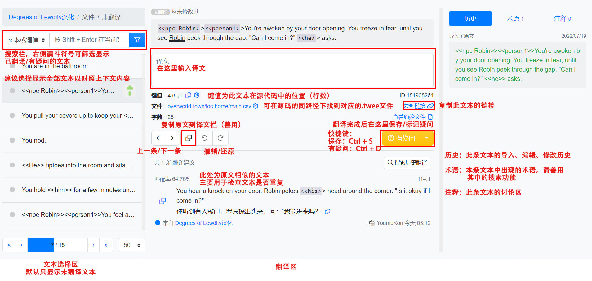
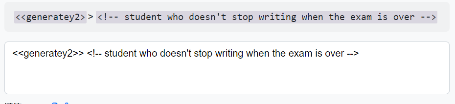
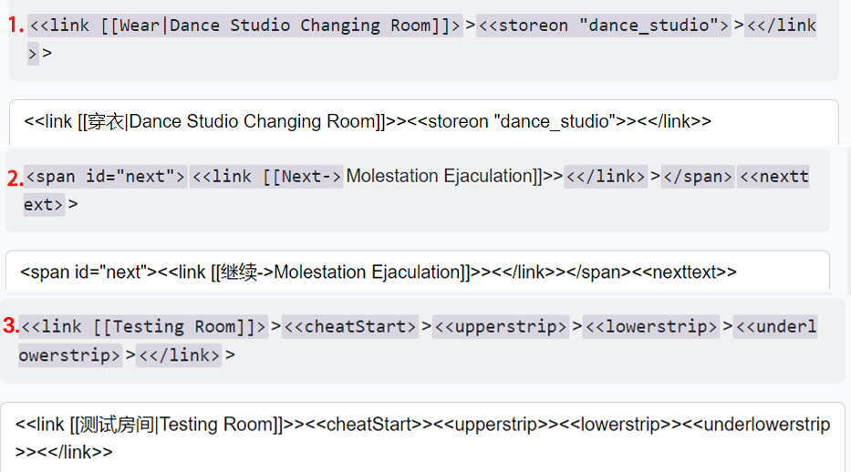
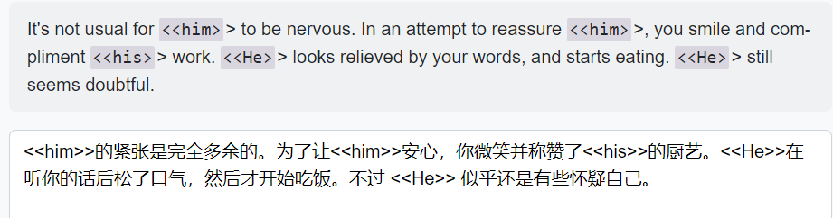
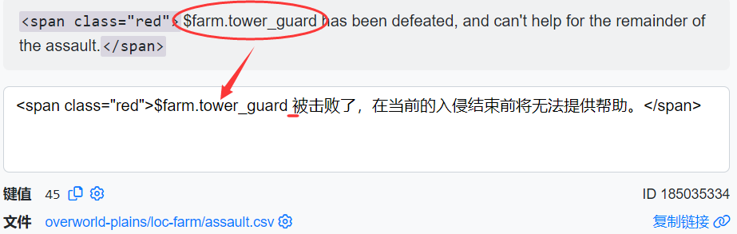
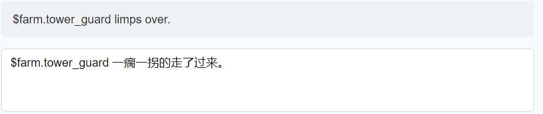

基本翻译指南（发布者：COUNTC）
常用链接导航
- 官方链接
- 翻译软件
- 代码相关
- 其它
ParaTranz基本界面说明：

本游戏基于 Twine 引擎，文本格式为 SugarCube2 格式，游戏文本中夹杂着大量的代码引用，变量，函数，判断语句占位符等内容。下面将会对常见的此类文本进行总结，如果你还是对某条塞满代码引用的文本困惑不已的话，不妨利用键值去检查一下源码中的上下文。对于实在无法理解的文本或出现未知的引用，请将之标记为有疑问。有能力或有编程基础的可以自行在 SugarCube2 官方文档中检查对应的语法格式。
（注意：版本更替后，原有的键值可能会出现偏差，此时请自行利用文本编辑器的搜索功能。）
-
由 “< !–”,"–>" 或"/“,”/"标记的文本

注释类文本，保留原文即可，无需翻译 -
由"<",">"单括号标记的引用
以功能性代码为主，单括号内的内容均需保留原文并保持其在文本中的位置和顺序 -
由"<<",">>"双单括号标记的引用
最常见的引用，除以下两种情况外，双括号内的内容均需保留原文并保持其在文本中的位置和顺序
注意：通过点击原文拷贝到下方的时候，末尾会少一个>，需要手动添加，切记。** 例外一：选项文本 **

存在上图所示三种变种，需翻译从"[[“开始，”|“或”->“结束间的内容，若无”|“或”->"，则在原文前手动添加"|“号并在”|"前进行翻译。** 例外二：人称代词 **

包括<<he>>,<<His>>,<<their>>等，需保证<<>>内结构完整并在翻译文本中保持相应位置
由于英语中存在大小写，宾格，所有格等变形，因此此类代词存在大量差分，在此一并统一其意义：
<<He>>,<<his>>,<<bhis>>,<<pHer>>及其所有变形：均会根据性别自动输出为"他/她/它"，请根据语境自行添加"的",“是"等助词
<<youself>>,<<himself>>及所有变形：“你自己/他自己”,后面不需再加"自己”。
<<thier>>,<<them>>及所有变形：“他们/它们”,有时they指代性别不明的单人，自行判断。
<<people>>,<<peopley>>,<<group>>：男人/女人/男孩/女孩（复数），同上
<<persony>>：男人/女人/男孩/女孩（单数）请根据具体语境自由调整，增添这些代词
对于人称代词以外的例如<<genitals>>,<<lewdness>>等占位符，也需在译文中为其留出相应空位。它们的意义将在之后上传至术语表中，你也可以通过查阅"degrees-of-lewdity-master\game\base-system"下的"text.twee"来获取相关信息
-
被"$","_",".“等标记的引用


主要为变量，特征是由”$"开头/被下划线或英文句号分割的小写单词。用来指代一个非固定的短语或句子。不要汉化。
注意!!:如图所示，一般其前后的空格需要删除，以保持句子连贯。但若是两个变量紧挨着，请在中间添加空格或汉字隔开。